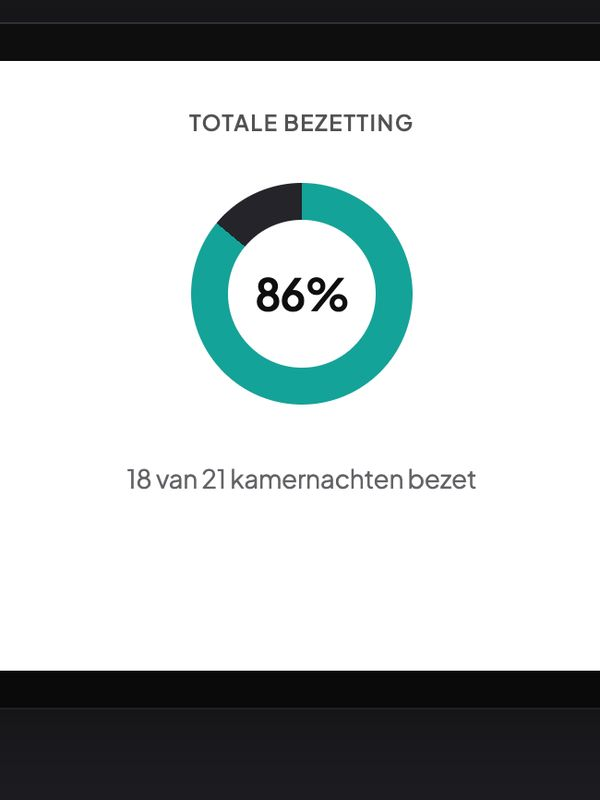
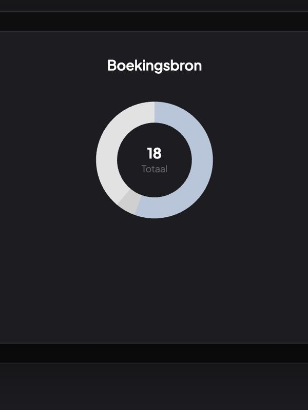
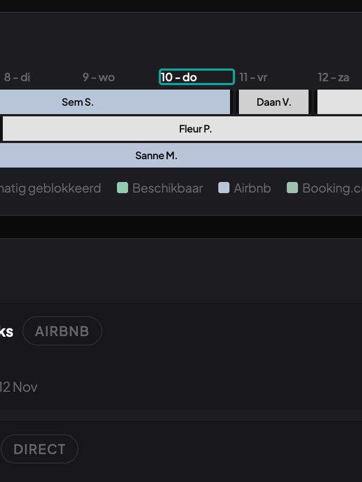
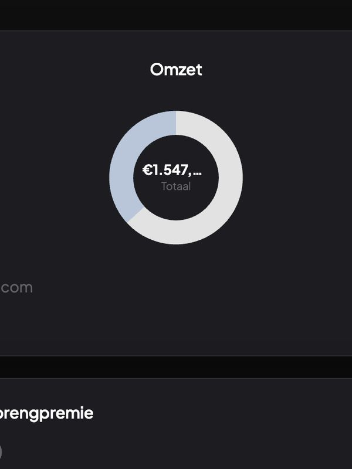
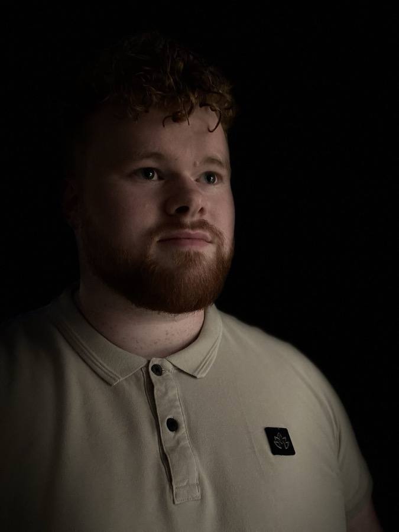
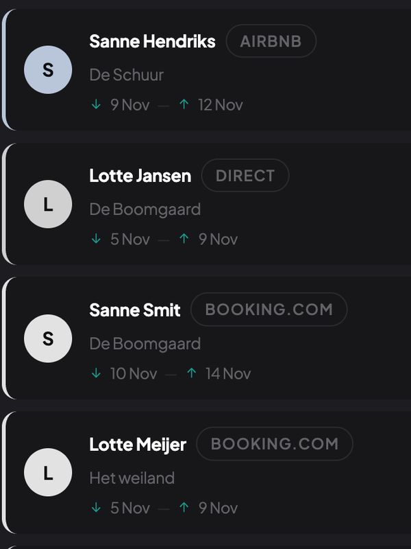
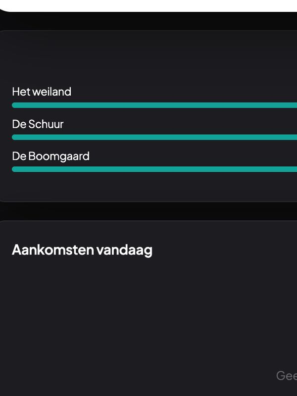
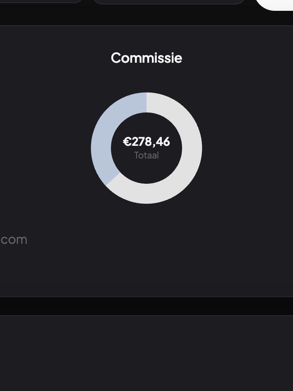
Accounts, billing, rights and sync. That is where most builds stall, and it is the entire subject of the channel. Fidestay is the running proof: a real marketplace with availability sync and real money moving through it.
Accounts, subscriptions, access that drifts out of sync with payment, payouts to two sides at once. The design tutorials end right before this, and this is where the money and the trust actually live.
A live marketplace and channel manager for B&B and small hotel owners in the Netherlands, launching in Limburg. Listings, availability sync with the platforms hosts already use, and payments. Live, taking bookings, with the first host on it.
Before the code I ran my own sales office and trained more than a hundred people to sell. Most builders can make the thing and then wait for someone to refer them. I would rather you could go and get the work yourself.
Four of them, at whatever stage they are honestly at. Where something has not shipped, it says so.
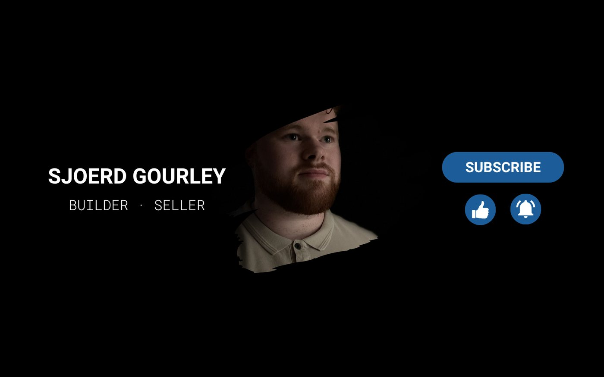
One big platform at a time, rebuilt on camera all the way down to the part that takes the money. English, long form. Nothing published yet, and it will say here when the first one is.
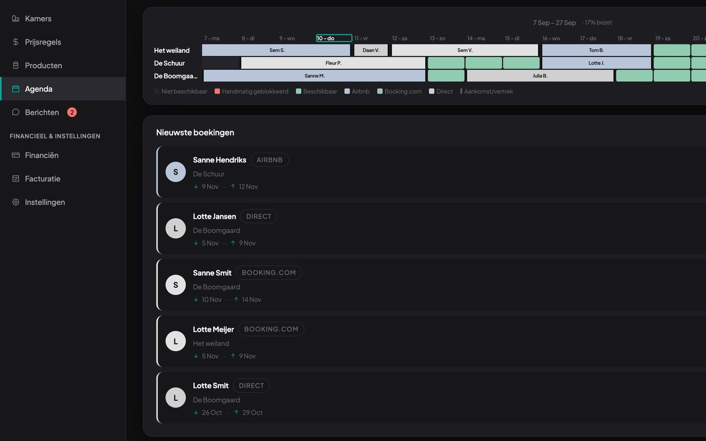
A booking marketplace plus the channel manager behind it, for B&B and small hotel owners in the Netherlands, launching in Limburg. Hosts publish once and their availability stays right everywhere else. Live, taking bookings, with the first host on it.
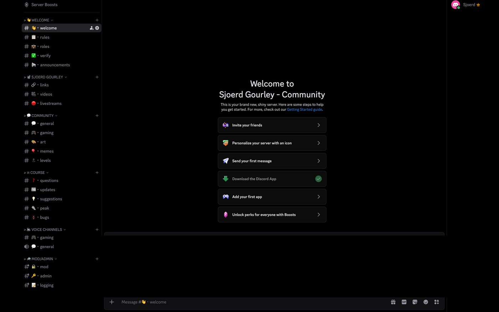
A paid place next to the channel for people who want to go further than a video can take them. Not open yet, and it will say here when it is.
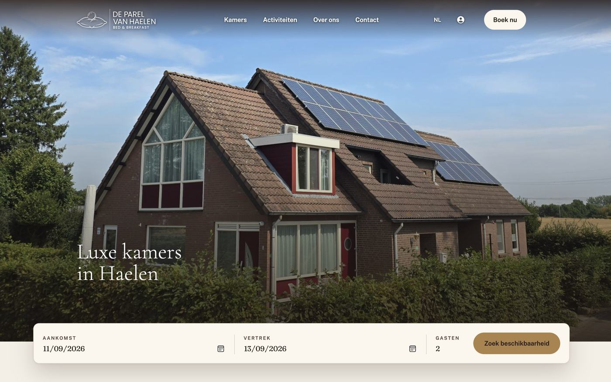
I build the hard end of the web, the platforms and the payment systems underneath them. The first one was my mother's B&B, and it turned into Fidestay.
Two good reasons to write. You are past the design and stuck underneath it, on the accounts or the payments or the sync, and you want a second pair of eyes. Or you want something built and you would rather hire someone whose work you have already watched. I read everything and I answer in English or Dutch.
hello@sjoerdgourley.comRun a B&B or a small hotel? Fidestay is at fidestay.nl.